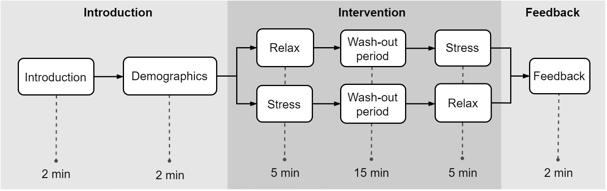
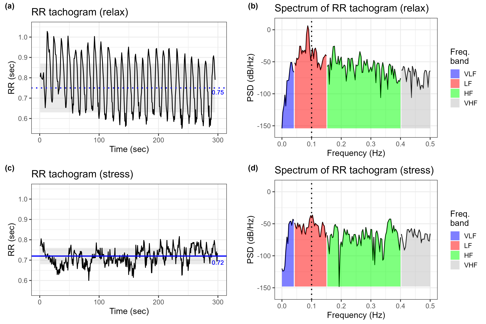

![]()
Important links
Abstract
Background: Heart rate variability (HRV) is a crucial metric that provides valuable insight into the balance between relaxation and stress. Previous research has shown that most HRV parameters improve during periods of mental relaxation, while decreasing during tasks involving cognitive workload. Although a comprehensive analysis of both linear and non-linear HRV parameters has been carried out in existing literature, there still exists a need for further research in this area. Additionally, limited knowledge exists regarding how specific interventions may influence the interpretation of these parameters and how the different parameters correlate under different interventions. This study aims to address these gaps by conducting a thorough comparison of different linear and non-linear HRV parameters under mentally relaxed versus stressful states.
Methodology: Participants were randomly and equally divided among two between-subjects groups: relaxed-stress (RS) (N = 22) and stress-relaxed (SR) (N = 22). In the RS group, a paced breathing task was given for 5 min to create relaxation, and was followed by a 5-min time-based mental calculation task to create stress. In the SR group, the order of the stress and relaxed tasks was reversed. There was a washout period of 15 min after the first task in both groups.
Results: Of the 37 HRV parameters, 33 differed significantly between the two interventions. The majority of the parameters exhibited an improving and degrading tendency of HRV parameters in the relaxed and stressed states, respectively. The correlation of the majority of HRV parameters decreases during stress, while prominent time domain and geometric domain parameters stand out in the correlation.
Conclusion: Overall, HRV parameters can be reliably used to assess a person’s relaxed and stressed mental states during paced breathing and mental arithmetic task respectively. Furthermore, non-linear HRV parameters provide accurate estimators of the mental state, in addition to the commonly used linear parameters.
Important figures


Citation
@article{chand_comprehensive_2024,
title = {A comprehensive evaluation of linear and non-linear HRV parameters between paced breathing and stressful mental state},
author = {Chand, Kulbhushan and Chandra, Shilpa and Dutt, Varun},
doi = {10.1016/j.heliyon.2024.e32195},
journal = {Heliyon},
year = {2024},
volume = {10},
number = {11},
pages = {e32195}}